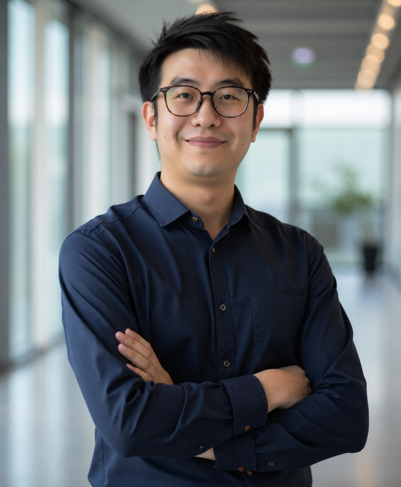

A multidisciplinary team working across materials, infrastructure, and innovation.
Our team brings together researchers working on sustainable concrete, advanced composites, durability, data-driven materials, and extraterrestrial construction.

Xijun (Jeff) Shi, Ph.D., P.E.
Civil Engineering · Ingram School of Engineering · Texas State University
Dr. Shi's research focuses on sustainable and high-performance construction materials, recycled materials in concrete, fiber-reinforced composites, infrastructure durability, biopolymer construction materials, and extraterrestrial construction.
About Dr. Shi
Dr. Xijun (Jeff) Shi, P.E., is an Assistant Professor of Civil Engineering at Texas State University (TXST), USA. He received his Ph.D. and M.S. degrees in Civil Engineering from Texas A&M University (TAMU) and earned his undergraduate degree from the “Mao Yisheng” Honors Pavement Engineering Program at Southeast University, China. Following his doctoral studies, Dr. Shi served as an Assistant Research Scientist/Postdoctoral Researcher at the Center for Infrastructure Renewal (CIR) at TAMU and as a Postdoctoral Researcher at the Texas A&M Transportation Institute (TTI).
Dr. Shi’s research focuses on advancing sustainable and multifunctional infrastructure materials, with particular emphasis on innovative construction materials and pavement engineering. Since joining TXST in Fall 2020, he has secured over 20 internal and external research projects as PI or Co-PI, totaling more than $15 million, funded by agencies including the National Science Foundation (NSF), NASA, NCHRP, USDOT, ACI Foundation, NMDOT, and TxDOT. Dr. Shi is the recipient of an NSF CAREER Award in 2026, supporting his work on recyclable biopolymer-based composite materials for construction in resource-limited environments. He is also a Co-PI of TXST’s USDOT Tier-1 University Transportation Center on infrastructure durability.
Dr. Shi has authored more than 50 peer-reviewed publications, including over 20 as lead author in leading journals such as Cement and Concrete Research, Cement and Concrete Composites, and Engineering Fracture Mechanics. He is actively involved in professional service through organizations such as the American Concrete Institute (ACI), Transportation Research Board (TRB), and American Society of Civil Engineers (ASCE). He serves as Secretary of ACI 555 (Concrete with Recycled Materials) and Chair of ACI 555-A, and is a voting member of ACI 565 (Lunar Concrete) and ACI 221 (Aggregates). He also serves on the editorial boards of several international journals.
Dr. Shi is engaged in technology innovation and commercialization. He is a co-inventor of a cost-effective, sustainable cementitious material, Plient Concrete, with a patent filed through TAMU. He won the 2021 TXST New Ventures Competition and received NSF I-Corps and PFI-TT funding to advance commercialization efforts. In 2022, he co-founded Circle Concrete Tech Inc., a startup focused on innovations such as Plient Concrete that significantly reduce the environmental impact of the concrete industry while enhancing cost-effectiveness and material performance. The company has received two SBIR Phase I projects, one from the EPA and one from the NSF. Dr. Shi is a recipient of the 2021 USDA E. Kika De La Garza Fellowship and was selected for the ACI Class of 2022 Emerging Leaders. He also mentored the TXST CaerusCrete team to first place in the 2022 NASA MINDS Undergraduate Student Design Competition with a lunar geopolymer project.
Researchers & students.
Postdoctoral, doctoral, and master's researchers in the SHI Lab.
Former group members.
Former SHI Lab researchers and students who have contributed to the group's research and activities.
Postdoctoral Researchers
Current Position: Visiting Scholar, University of Victoria, Canada
Current Position: Assistant Professor, Indian Institute of Technology Bombay
Graduate Students
Co-advised by Dr. Robert McLean
Co-advised by Dr. Anthony Torres